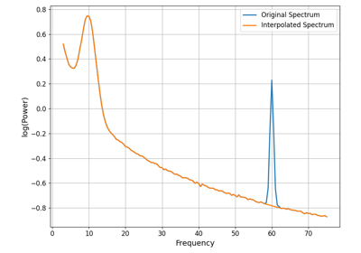
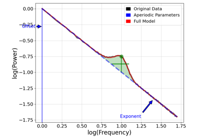
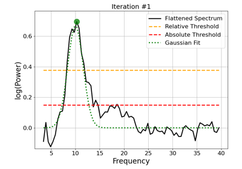

fooof.plts.plot_spectra¶
- fooof.plts.plot_spectra(freqs, power_spectra, log_freqs=False, log_powers=False, freq_range=None, colors=None, labels=None, ax=None, **plot_kwargs)[source]¶
Plot one or multiple power spectra.
- Parameters
- freqs1d or 2d array or list of 1d array
Frequency values, to be plotted on the x-axis.
- power_spectra1d or 2d array or list of 1d array
Power values, to be plotted on the y-axis.
- log_freqsbool, optional, default: False
Whether to plot the frequency axis in log spacing.
- log_powersbool, optional, default: False
Whether to plot the power axis in log spacing.
- freq_rangelist of [float, float], optional
Frequency range to plot, defined in linear space.
- colorslist of str, optional, default: None
Line colors of the spectra.
- labelslist of str, optional, default: None
Legend labels for the spectra.
- axmatplotlib.Axes, optional
Figure axes upon which to plot.
- **plot_kwargs
Additional plot related keyword arguments, with styling options managed by
style_plot. For spectra plots, boolean input grid can be used to control if the figure has a grid.
Examples using fooof.plts.plot_spectra¶

Dealing with Line Noise

Aperiodic Parameters



03: Fitting Algorithm